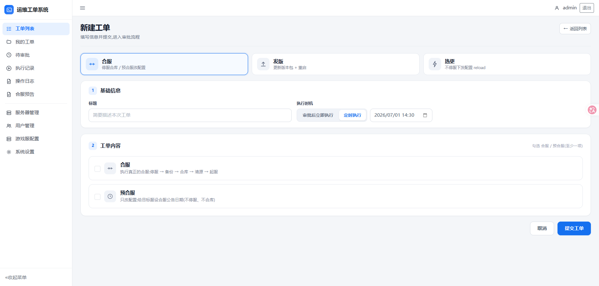
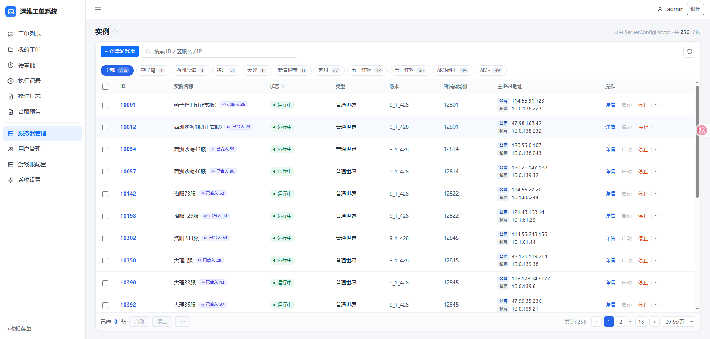
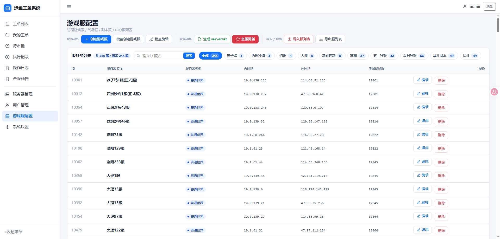
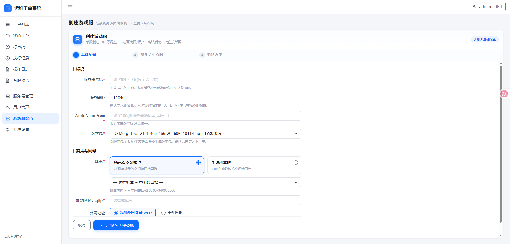
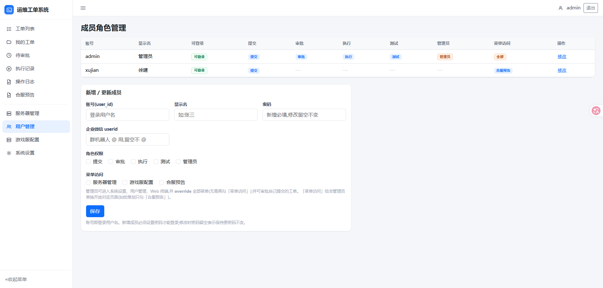

把分散的 SVN 配置管理、手工脚本与零散 SSH 操作，收敛成一个有审批留痕、可回滚、可观测的统一控制台 —— 一处管控 256+ 台游戏服的配置、发版、合服、启停与状态。
大规模游戏服运维的痛点不在单台操作，而在规模化下的可审计、可回滚、可观测。这套平台把高频高危的运维动作收口成标准工单。
从工单审批、服务器管控、配置下发，到发版热更、合服、新建服向导与即时通知，构成完整的运维操作面。
提交 → 审批 → 执行 → 测试 → 开放 五段状态机；角色门禁、审批 / 驳回、全程操作留痕。
256+ 服集中视图；SSH 并发实时探测状态、启停 / 强杀 / 修复 / 内存启动、批量操作、登录限制、包版本展示。
配置库受管替代 SVN；表格化批量编辑、行级 diff、一键生成与发布。
建单冻结快照 + 线上 diff；COS 版本控制做基准防覆盖，审批通过后全服热下发。
换包、DB 版本逐级升级（包版本解析 + 库版本比对）、分波重试、GM 热更下发。
合服 / 预合服工单一体化；合服预告配置库化受管，提交即生成、一键发布。
自动算 ID、紧凑选机、分配端口、联动建战斗 / 中心服；事务写库、自动建库与 ALB 转发。
工单 9 个关键节点状态变化，自动推送群机器人并 @ 对应责任人。
按用户的菜单访问门禁，路由 + 侧边栏双重校验；敏感页面仅管理员可见。
选取五个最能体现设计深度的模块展开。截图均已脱敏处理。
系统的中枢。把合服、发版、热更、配置下发等高危操作统一收口为工单，按五段状态机流转、留痕、按角色门禁。

images/01-orders.png云控制台风格的集中视图，把 256+ 台游戏服的状态、版本、网络与操作收进一张表。

images/02-servers.png把原本散落在 SVN 的服配置全量入库受管，表格化编辑、一键生成与全服下发，配置变更从此可追溯。

images/03-gsconfig.png三步向导把「开新服」从一长串手工脚本，变成填几个字段、系统自动编排的一站式动作。

images/04-create.png基于角色的访问控制：把「谁能提交、谁能审批、谁能执行」固化成矩阵，再叠加菜单级门禁。

images/05-members.png一个 Go 单体应用，向上服务端渲染轻前端，向下并发驱动 SSH、数据库、对象存储与云资源。
面向生产高危操作的工程纪律：测试先行、幂等可重试、三重防误操作、凭据零外泄。
关键路径单测覆盖，全量 go test 通过；改动均先红后绿。
建组 / 写库 / 部署前先查存在性，工单重试不产生重复副作用。
分波重试只补跑失败的服，不重跑已成功步骤，缩短恢复时间。
基准校验 + 强杀拦截 + 审批门禁，把高危动作拦在执行之前。
DB 密码只在内存连接串，绝不进命令、日志或前端响应。
spec → plan → 分任务实现，复杂功能先对齐设计再动手。